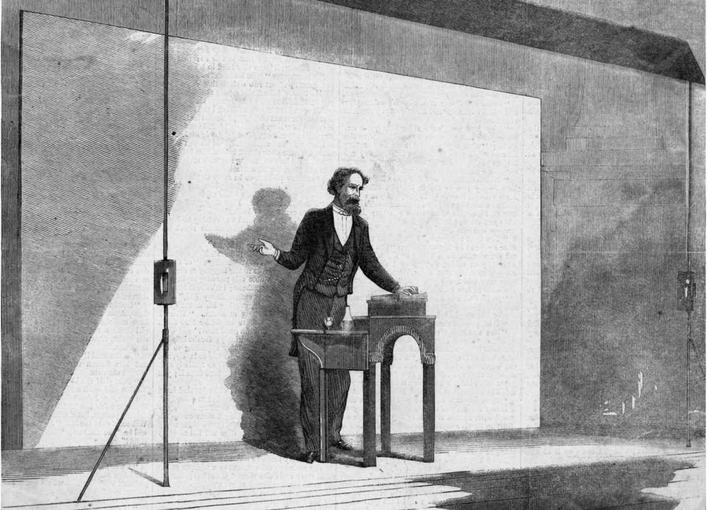

1829年6月，《爱丁堡评论》杂志刊登了由苏格兰人托马斯·卡莱尔撰写的一篇名为《时代征兆》的文章。卡莱尔认为，“机械时代”——也就是工业革命——正以前所未有的凶猛程度，摧毁人的个性。英格兰陷入了道德危机：
在后期的小册子《宪章运动》（1840）和《过去与现在》（1843）中，卡莱尔将这一危机称为“英格兰现状”。人文精神的机械化，即工业发展所造成的高昂的道德代价：这些也正是随后的几十年时间里最具影响力的一批小说关注的主题，比如伊丽莎白·盖斯凯尔夫人的《玛丽·巴顿》（1848）和《北方与南方》（1854）、查尔斯·金斯利的《阿尔顿·洛克》（1854）、狄更斯的《艰难时世》，以及乔治·艾略特的《菲利克斯·霍尔特》（1866）。
广义上说，19世纪的小说都在关注“英格兰现状”。在简·奥斯丁的《曼斯菲尔德庄园》（1814）中，那栋大宅子靠着西印度群岛糖料种植园的利润来维持日常开支，这就是英格兰。在托马斯·哈代的小说世界中，《德伯家的苔丝》（1891）中的苔丝被打上堕落女人的烙印，《无名的裘德》（1895）中的裘德则被大学排除在外，这样的世界就是英格兰。汉弗莱·沃德夫人的《罗伯特·埃尔斯密尔》（1888）是当时最畅销的作品之一，年轻牧师罗伯特·埃尔斯密尔在他的寓所中丧失了宗教信仰，这样的寓所就是英格兰。特罗洛普的巴塞特郡系列小说对于英格兰现状展开了调查；萨克雷的《名利场》（1848）同样如此；此外，H.G.威尔斯以未来为背景的小说《时间机器》（1895）描写了穴居的劳动阶级莫洛克人与衰弱的有闲阶级埃洛伊人之间的阶级对立。
狄更斯的《荒凉山庄》（1853）就是英格兰：城市和乡村一分为二，几个世纪以来英格兰一直如此。在切斯尼山庄的深处，当瓢泼大雨打在窗户上时，德洛克夫人——这个人物是《曼斯菲尔德庄园》中的伯特伦夫人的极端版本——由于极度无聊而感到窒息，她的内心深处隐藏着一个阴暗的秘密。约翰·罗斯金在名为《十九世纪的乌云》（1884）的讲座中指出，都市化和工业发展的碳排放量已经使这个民族的道德生活为之窒息。在罗斯金之前，狄更斯在《荒凉山庄》的开头通过独特的艺术风格表达了类似看法。无论是现实层面还是隐喻层面，伦敦到处是雾：
然而，狄更斯从这片黑暗中创造出了生活。和之前的文学作品相比，他笔下的人物在风格上更加兼容并蓄，同时也更为怪异。以《荒凉山庄》为例。克鲁克死于人体自燃。格皮就像小狗一样急切。杰利比夫人是个“关注远方的慈善家”，她积极投身于非洲博里奥布拉–格哈地区的土著人教育事业，却因此忽视了自己的家庭。乔是个无家可归的道路清洁工，处于整个社会秩序的最底层，但他掌握着无名人“尼姆”的身份秘密；与此同时这个秘密也将打开德洛克夫人封闭的内心，将她从呆滞状态中唤醒，促使她来到伦敦一处寒冷、苦涩的墓地，她将在那里遭遇爱情和死亡。图金霍恩是个阴险的律师。布克特探长属于后来的英格兰小说中很常见的一类人物，那就是侦探。这部作品中类似的个性化人物还有几十个。正如小说家乔治·吉辛所言，狄更斯把他看到的一切都“记在心里”。
1845年夏天，狄更斯在一次业余演出中登上舞台，扮演夸夸其谈的伯巴狄尔上校，并大获成功。这出戏改编自本·琼生的剧作《人人高兴》，由狄更斯亲自选角、制作、导演。戏剧是狄更斯的最爱，他在《尼古拉斯·尼克尔贝》（1839）中满怀温情地描写了剧团人员的生活，从中可以推断出他对于戏剧的看法。在塑造喜剧人物时，狄更斯常常通过名字来揭示他们各自的性格，这种做法同样源自本·琼生的喜剧。英格兰小说在骨子里有戏剧成分：菲尔丁之所以成为小说家，是因为1737年颁布的《剧目审批法案》导致他的戏剧生涯被迫终止；理查森模仿王政复辟时期戏剧舞台上的浪子形象，塑造了洛夫莱斯这个人物；伯尼更希望成为剧作家，而不是小说家；简·奥斯丁不仅怀着热切的心情观看戏剧表演，而且借用戏剧场景的形式来安排小说结构，还和家人朋友一起大声朗读她作品中的对话。但是狄更斯是这些作家当中最富戏剧性的人，他后来将自己的小说中最精彩的部分转化为公开朗读时的个人表演。

图9 作为戏剧表演的小说：正在公开场合朗读的狄更斯
《我们共同的朋友》（1865）中的甘普夫人是狄更斯所塑造的让人最为难忘的怪诞人物之一。吉辛在谈到这个人物时提出，幽默和仁慈有着密切联系。幽默不仅使狄更斯“把这个粗俗的家伙当作一个有趣的人”，而且产生了更为深远的影响，那就是“让他从宽容的态度当中获得灵感，从而能透过外表来观察，充分重视环境的影响，并且在人的判断力中保留一份克制，一份谦逊”。对于幽默的这种概括或许并不准确。宽容和谦逊并不足以涵盖乔纳森·斯威夫特的作品或者马丁·艾米斯的《金钱》（1984）中那种带有野蛮气息的愤怒情绪。但是，许多优秀的英格兰滑稽小说的确表现出这类幽默风格——比如，乔治·格罗史密斯和威登·格罗史密斯兄弟俩合作撰写的《小人物日记》（1892）、伊夫林·沃的《衰落与瓦解》（1928）、斯特拉·吉本斯的《寒冷舒适的农场》（1932）、P.G.沃德豪斯的《伍斯特一家的规矩》（1938），以及南茜·米特福德的《追逐爱情》（1945）。很大程度上，狄更斯的作品同样表现出了这类幽默。
狄更斯的小说对童工、社会不平等、贫困、恶意、污垢和英式虚伪等现象提出抗议。但是这些作品富有同情心，通常会在结尾部分对人物进行奖惩（值得褒奖的人物会意外得到遗产）。小说艺术还有另一面，要想彻底了解人物的复杂性、人物之间的关系，以及他们所处的社会环境，就必须相信人类的智慧。
从标题来看，《米德尔马契：地方生活研究》（1872）似乎是一部关于英格兰中部地区现状的小说，但它的实际内容远不止这些。多罗西娅·布鲁克的故事是对古典悲剧的一种演绎。乔治·艾略特在小说序言中指出，多罗西娅是当代的圣特蕾莎，她过着“错误的人生，是高贵的精神和糟糕的运气共同造就的产物”：“混乱的社会信仰和秩序帮不了她，没法像知识帮助热切的灵魂那样，起到引导作用”，因此她“在模糊的理想和女性的渴望之间摇摆不定；前者遭到反对，被认为过于奢华，后者受到谴责，被认为是自甘堕落”。当时的英格兰现状就是这样，面对“混乱的社会信仰和秩序”，小说家必须介入，创造出一种秩序，一个可以掌控的世界。小说为我们提供了“某种高贵的精神”，虽然我们很可能是由猿猴进化而来，而不是由上帝创造，但这样的进化论主张并不会破坏小说的高贵精神。乔治·艾略特晚年嫁给了J.W.克罗斯，后者的描述有助于我们理解文学创作的过程：
（J.W.克罗斯，《乔治·艾略特传》，1884）
这就是最优秀的文学作品所具有的力量：一股“不属于她自己”的力量“控制”着作家，帮助她创造出一个虚构世界，继而这个虚构世界又“控制”着读者，引领我们离开现实世界。当我们在作品中游历一番后重新回到现实时，我们发现自己已经产生了变化，变得更有人情味，并且在情感问题上更加睿智。在乔治·艾略特的指引下，全心投入的读者将会在她的作品中找到一种新的（虽然只是暂时的）秩序。